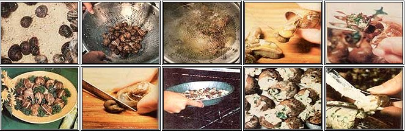

When snails invade your crops, get ready for some good eating!
Snails are one group of pests that most folks would like to evict from their gardens forever. For us MOTHER types who aren't fond of chemical baits, about the easiest way to reduce the population of these leaf munchers is to pick 'em off the plants by hand. But what do you do with the creatures after you've collected a batch? Why, you cook 'em up, of course!
Now before you get queasy . . . remember that snails belong to the phylum Mollusca which includes oysters, clams, and other familiar shellfish-and can be used in gumbos or any other recipes calling for such "ordinary" edibles. For centuries escargots , as the French know them, have been a popular European dish . ... their consumption actually dates back to the Stone Age!
Snails are believed to have been brought to America during the nineteenth century and cultivated here as a food source. Some of the gregarious immigrants escaped . . . liked the climate ... and multiplied rapidly. Their descendants-which still menace our gardens today-are rich in protein and minerals and low in calories ( about 90 units per 100 grams of meat).
According to the U.S. Department of the Interior, several types of common land snails found in this country are known to be edible. Here are the descriptions of just a few varieties:
Burgundy or Roman Snail ( Helix pomatia ) : Its light tan shell has a rather wide, uninterrupted spiral brown band.
Petit-Gris, Brown Garden, European Brown, or European Spotted Snail ( Helix aspersa ): This one's yellow or off-white shell is large, rather thin, and has brown spiral bands with yellow flecks or streaks.
Milk or Spanish Snail ( Otala lactea ): Its flattened, white shell has reddish-brown bands.
Wood Snail ( Cepaea nemoralis ): The shell might be yellow, olive, or red, but it usually has one to five reddishbrown bands.
If you'd like to know which toothsome mollusks are found in your area, you can order a free booklet- Edible Snails of the United States -from the U.S. Fish and Wildlife Service, 18th and C Streets N. W. , Washington, D.C. 20420.
As you probably already know, snails are nocturnal and prefer to feed on tender flowers and vegetable plants during the first half of the night. By day, the little critters hide in cool, dark, moist places. If the weather becomes too hot or cold, they'll hibernate until conditions are favorable.
According to connoisseurs, escargots taste best in the fall, but they can be eaten any time of the year. It's wise, however, to catch only mature specimens . . . with shells of at least one inch in diameter. Immature snails don't yield much meat, and their "houses" will break easily when handled. (Be sure, too, that those you collect are alive: The healthy specimens will withdraw into their shells when touched.)
One simple way to gather the little beasts is to thoroughly water an infested area at dusk. The dampness will bring the snails out of hiding, and after waiting an hour or soyou can use a lantern or flashlight to spot your harvest. It's also possible to trap snails by laying boards, stones, lettuce leaves, or citrus fruit rinds on the ground (place 'em near plants for best results). Then, all you have to do is gather up the snails that will be hidden underneath your "snares" early the next morning. (If any pesticides have been used on your lawn or garden, though . . . the area should be watered down thoroughly, and the mollusk harvest postponed for at least six weeks.)
Once you've collected a supply of snails, they must be purged of any toxic materials-and blanched before being prepared for the table. These processes are relatively simple, but essential. And if you'd prefer your escargots super-tender (rather than just a mite chewy), you may want to simmer the meat awhile, too, before embarking on a recipe. [EDITOR'S NOTE: See the sidebar that accompanies this article for pre-preparation details.]
When the pests-turned- have been cleansed, fattened, and blanched ... pull them from their shells-with a toothpick, ice pick, nut pick, or small knife-and discard the small, dark, fleshy coil (it's found at the end of the snail's body) that connects each animal to its shell. (The dark area is the gallbladder, and it's bitter.) You may also want to cut off any horny operculum at the tip of each snail's head. Now, rinse the meat again under cold water.
This is a good time to prepare a number of the prettier shells for future use. To clean the natural "serving dishes", boil 'em for 30 minutes with 1/4 teaspoon of baking soda to each pint of water. Then drain the shells and rinse them thoroughly.
Most all European cookbooks have elaborate recipes for snails, but here are a few simple (yet delicious!) "food formulas" from the University of California's Cooperative Extension.
STUFFED SNAIL SHELLS Simmer the cleaned and blanched snail meat in salted water until tender. Then chop up the tiny "steaks" and mix 'em with minced garlic. Sauté in olive oil or margarine for about five minutes. Stuff the cooked meat into a shell, seal the opening with garlic butter, place under a broiler until the butter bubbles, and serve the dish immediately.
(To make garlic butter . . . cream 1/2 cup of butter or margarine, 3 tablespoons of finely chopped parsley, 2 teaspoons of minced green onions and tops, 1 clove of crushed garlic, 1/4 teaspoon of salt, and 1/8 teaspoon of pepper until all the ingredients are thoroughly blended.)
FRIED SNAILS Place your prepared snail meat in water (to cover) seasoned with salt, bay leaf, garlic, and parsley . . . and let the pot simmer for 10 minutes. Roll the cooked meat in fine cracker or bread crumbs- seasoned with salt, pepper, and garlic powder-and then fry the escargots in hot oil until they're browned. Sprinkle the succulent morsels with lemon juice just before serving as an entree or as hors d'oeuvres.
To make three servings, combine-inside an ovenproof dish-18 cleaned and blanched snails, 2 slices of diced bacon, 9 tiny whole onions (or 1/2 cup of chopped onion), 1 clove of crushed garlic, 1 tablespoon of minced parsley, 1 cup of red wine or grape juice, 1/4 teaspoon of pepper, and a pinch of thyme.
Cover your container and bake for one hour at 275°F. Just before you dish up the delicacy, thicken it with a butter and flour mixture . . . and serve it over toast or croutons.
First, sauté 1 chopped medium-sized onion, 2 cloves of crushed garlic, and 1/2 cup of diced bell pepper in oil. Add a 1-pound can of tomatoes ( and salt and pepper to taste), then simmer until the bell pepper is tender and the flavors are blended. Add 1 pint of cleaned and blanched snails and simmer the mixture for 10 minutes. When this combination is spooned over toast, rice, or noodles, the dish will provide from four to six mouthwatering servings.
Here's more about every gourmet's favorite gastropods ... from Roland and Claire Eves.
Garden snails are superb as a "special" dinner treat or food staple. Our supermarket sells a tin of 24 of the delicacies for $4.00, and most French restaurants will serve up a dozen for an even higher price. In our suburban neighborhood, however, one person can gather 100 to 200 " escargots on the hoof" in about 20 minutes on almost any night following a rain . .. and the pickin's are free!
GOOD'N' HEALTHFUL
Besides being delicious, snails are very nutritious . .. the critters are good sources of both protein and glycogen (a storage form of glucose). Better yet-since they're hermaphroditic-any two of the shelled animals can produce prolifically. They're definitely not an endangered species (as are some sources of wild food), so you needn't fear that your appetite for the marvelous mollusks will exterminate the local population.
Many cultures have held snails in high esteem. Ancient Romans were so addicted to the "creep-alongs" that they had farms where snails were fed on special diets of flour and spices. Orientals and many African peoples have also long regarded them as a staple, and-of course-the French have made a fetish of escargots .
We've only had personal eatin' experience with the common garden snail of southern California . . , which is of the same genus if not the same species-as the French variety. We suspect, however, that-for cooking purposes-most land snails are pretty much the same (of course, you should check your local snails against a good field guide-or the U.S. Fish and Wildlife Service booklet mentioned above-before you eat them) . . . provided you follow an uncomplicated, but lengthy and necessary , preparation procedure.
You must allow a week or more for the elimination of toxic substances from the snails' systems (chemicals ingested from plants which the crawlers can eat but you can't, along with any "snail bait" they may have encountered on their way to your garden). Of course, any area with a large snail population probably belongs to a nonpoisoning owner . . . but play it safe by keeping your catch for a week or two to cleanse migrants from less "kosher" yards. (Snails travel farther-and in less time than you might think!)
FROM GARDEN TO GARLIC SAUCE
We put our captured creatures in a large, clean container. (Figure between 12 and 18 snails in one two-pound coffee can.) Then we cover the vessel with a ventilated lid and place it in a cool, shady spot. Be sure the top is secure enough to prevent your charges from escaping, because these mighty mollusks can lift five times their weight while traveling up a vertical surface, and-on the horizontal-can pull objects 200 times heavier than themselves!
The next step is to starve your future delicacies for 48 to 72 hours. (They won't die, but will simply expel their waste products and go into hibernation. You can tell when this "sleeping state" is reached, because the snails will close the apertures of their shells with a hard, buttonlike secretion-the operculum-which can be removed before cooking.) After the fast, place the critters in oatmeal or cornmeal for 10 days to two weeks . . . to fatten them up and further clean out their digestive tracts. Your small "livestock" may be kept for a long time if their food is changed every other day to keep it from molding or souring.
When the crop is ready to be cooked, discard any specimens chat don't respond when touched, scrub the shells with a vegetable brush, and drop the snails into boiling water with a few teaspoons of salt and vinegar (and possibly a bay leaf) added. Let 'em simmer for 10 minutes, then rinse each individual thoroughly to remove the "slime". Folks who express disgust at the notion of eating a snail almost invariably explain that "snails are slimy" . . . and they're correct. The shiny film is a secretion which protects the external membranes of these former sea creatures. And, while it's not a "filthy" excrement in any respect, it does create a peculiar sensation in the mouth if it's not completely removed.)
When you've rinsed to your satisfaction (you'll be able to tell when the slipperiness has washed away) . . . remove each snail from its shell, cut off the dark-colored gall (about 1/4 inch long) on its tail, and simmer the meat for about two hours for maximum tenderness. (Remember that simmering means cooking food at very low heat. All protein becomes tough at high temperatures, as a few experiments with hard-boiled eggs will demonstrate.)
At this point, your escargots can be frozen or used immediately in a variety of ways. We prefer a sauce of olive oil, wine, garlic, basil, tarragon, and a dash of nutmeg. Stir an equal volume of mushrooms and snails into this mixture, and simmer for 15 to 20 minutes . . . or stuff a few mushrooms with "mollusk meat" and broil these for a few minutes. Either way, you'll produce a dish so delectable that one feels almost decadent eating it.
It's nice to know that we can cook up a delicious snail dinner any time we want one-by simply gathering the raw materials along our street . . . and, apparently, we're not alone in our enthusiasm.
At 2:00 a.m. one recent night, Roland-armed with a bucket and flashlight-was stopped by the local police. The men in blue cheerfully asked him, "Are you collecting snails?" When Roland admitted that he was, they drove on.
What more could one ask as evidence of the awakening consciousness of alternative lifestyles?
|
 CLOCKWISE FROM TOP' LEFT: Cornmeal cleans 'em out and fattens 'em up .... A good bath will soon remove all the ""slime"" . . . . Blanch the snails with a brief boil in water spiced with vinegar and a bay leaf .... Any pointed tool will evict the critters from their homes . . . . Cut the dark bitter-tasting gallbladders off of the snails .... Cook till tender, then restuff 'em with some tasty garlic butter .... The French have made a fetish of traditional escargots .... Broil your ""mollusk meat"" until it bubbles .... They're so delicious, you feel almost decadent when you eat them. |
|
|